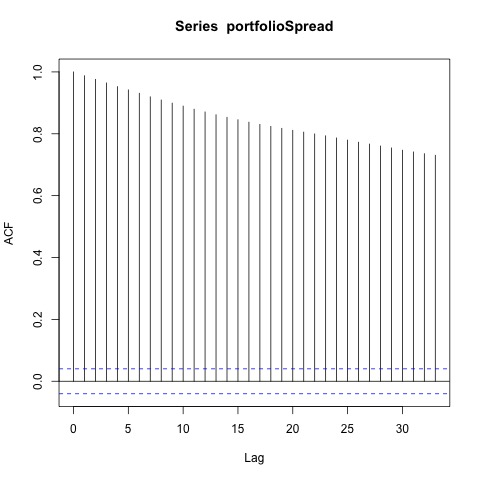
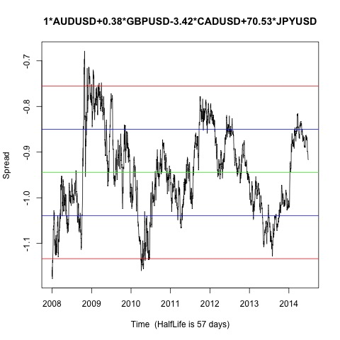

Johansen-Procedure "" "10pct" "5pct" "1pct" "r <= 3 |" 2.22 7.52 9.24 12.97 "r <= 2 |" 11.12 17.85 19.96 24.6 "r <= 1 |" 28.93 32 34.91 41.07 "r = 0 |" 51.22 49.65 53.12 60.16 "AUDUSD.l2" "GBPUSD.l2" "CADUSD.l2" "JPYUSD.l2" "constant" "AUDUSD.l2" 1 1 1 1 1 "GBPUSD.l2" 0.38 -0.5 0.38 -1.5 -1.05 "CADUSD.l2" -3.42 -1.06 -1.41 -6.73 -0.07 "JPYUSD.l2" 70.53 -33.78 -14.77 -750.8 -98.92 "constant" 0.95 1.26 -0.02 16.21 2.45
Augmented Dickey-Fuller Test p-value 0.0592567297643591 